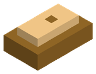
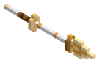
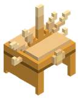
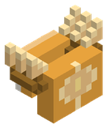
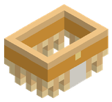
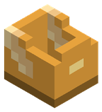
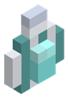
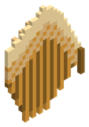
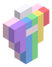

Objetos › Material

Lingote de oricalco
Material
Cómo se consigue
- Fabricación (Forja Élfica):
 Oricalco dorado ×2 +
Oricalco dorado ×2 +  Carbón ×2
Carbón ×2 - Cofres de mazmorra hasta nivel 380 (60 %)
Para qué sirve
- Ingrediente de:
 Pico Solar de Oricalco,
Pico Solar de Oricalco, 
Lanza Solar de Oricalco,
Corona Solar de Oricalco,
Pectoral de Oricalco,
Grebas del Amanecer,
Botas del Vástago Solar,
Amuleto de la Perla del Leviatán,
Alas de Oricalco del Arcángel Mayor,
Amuleto del Prisma Solar
Identificador: orichalcum_ingot · archivo mods/items/minerals_z56.json